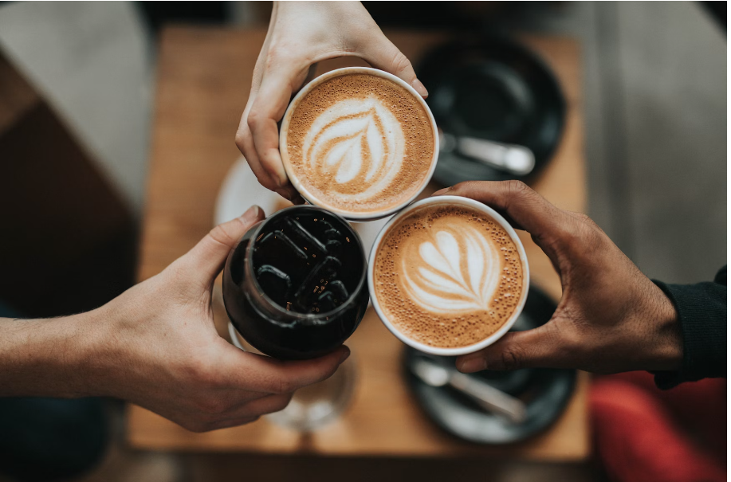

Our Vision
At Maple Coffee, our mission is to craft exceptional coffee experiences that delight and inspire our customers. Rooted in a commitment to quality, community, and sustainability, we strive to create a warm and inviting atmosphere where people can gather, connect, and savor moments of joy. Through our dedication to sourcing the finest beans, fostering meaningful relationships with local suppliers, and reducing our environmental footprint, we aim to not only serve outstanding coffee but also contribute positively to the world around us. At Maple Coffee, every cup tells a story of passion, craftsmanship, and the love for coffee that we share with our community..
What We Do?

Welcome to Maple Coffee, where we take pride in offering an array of premium coffee beverages tailored to suit every taste bud. Our diverse menu boasts an assortment of espresso-based drinks, freshly brewed coffees, specialty teas, and delectable pastries, all meticulously prepared with care. We prioritize quality and freshness, carefully selecting our beans from trusted growers and suppliers to ensure unparalleled flavor in each cup. Dedicated to cultivating a friendly atmosphere, we are committed to providing outstanding service and genuine hospitality, aiming to create memorable experiences for our patrons. At Maple Coffee, we go beyond serving coffee; we craft moments of warmth, connection, and indulgence for all who step through our doors.
Our Mission
Our aspiration is to serve as the heartbeat of our community, where each sip of our carefully crafted beverages ignites joy and connection. We envision Maple Coffee not merely as a coffee shop, but as a beacon radiating warmth and hospitality, drawing friends together, nurturing ideas, and strengthening relationships. Guided by a steadfast commitment to quality, sustainability, and service excellence, we strive to elevate the coffee experience, sparking moments of delight and fostering a culture that values life's finer pleasures. Through innovation, passion, and a steadfast dedication to our craft, we aim to be synonymous with outstanding coffee and unmatched hospitality, enriching the lives of all who step through our doors.